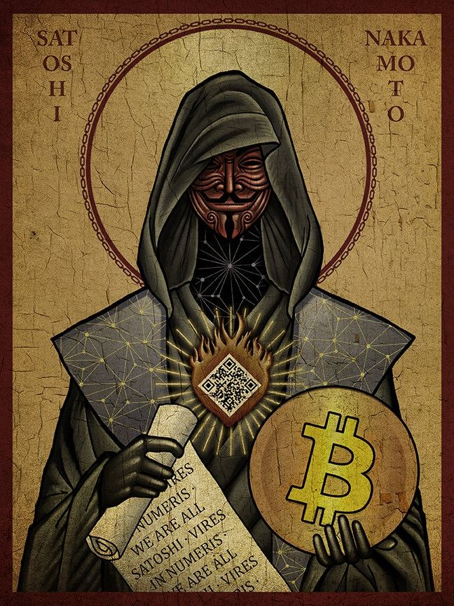

A Gênese e o Fim dos Intermediários
O Bitcoin não surgiu por acaso. Ele foi a resposta direta à crise financeira de 2008, quando o sistema bancário global entrou em colapso e governos precisaram imprimir trilhões de dólares para salvar instituições privadas. Em 31 de outubro daquele ano, Satoshi Nakamoto apresentou o whitepaper "Bitcoin: A Peer-to-Peer Electronic Cash System". A proposta era audaciosa: criar uma moeda que não dependesse de bancos centrais ou da confiança em terceiros. Ao minerar o primeiro bloco da rede em janeiro de 2009 (o Bloco Gênese), Nakamoto incluiu uma manchete de jornal sobre o resgate dos bancos, deixando claro que o Bitcoin nascia para devolver o poder financeiro às mãos dos indivíduos por meio da criptografia e da descentralização.
Do "Dinheiro de Nerd" à Reserva de Valor Global
Nos primeiros anos, o Bitcoin era visto apenas como um experimento tecnológico sem valor comercial. O marco histórico de sua utilidade real aconteceu em 2010, no famoso "Bitcoin Pizza Day", quando um programador comprou duas pizzas por 10.000 BTC — o que hoje representaria uma fortuna imensurável. Desde então, a rede nunca foi hackeada, provando a robustez da tecnologia Blockchain. O que começou como um meio de troca digital evoluiu para ser o "Ouro Digital" do século XXI. Devido à sua escassez matematicamente comprovada (haverá apenas 21 milhões de unidades), o Bitcoin tornou-se a ferramenta de defesa mais eficiente contra a inflação e o confisco, permitindo que qualquer pessoa no mundo possa exercer a verdadeira autocustódia de seu patrimônio com total liberdade.
